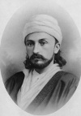

Doğru din hangisidir? Bir İran mistiği olan Bahaullah (1817–1892) bu soruya hiç de ortodoks olmayan bir yanıt verdi: Hepsi. Böylece 1863 yılında Bahai inancı ortaya çıkmış oldu.

Dinlerin birliği, Bahai inancının temelidir. Filistin’de kurulan Bahai dininin günümüzde 5 milyona yakın takipçisi vardır. Bahaullah etnik ve dini bölünmeleri reddetti. Ona göre Hz. İsa, Hz. Musa, Buda ve diğer dini şahsiyetlerin her biri Tanrı’nın sözlerini doğru bir biçimde dile getirmişti.
Bahaullah İran’ın başkenti Tahran’da doğdu. Asıl adı Mirza Hoseyn Ali Nuri idi. Şii bir Müslüman olarak yetiştirildi. Gizli bir mezhep olan Babiliğe dahil olunca adını değiştirdi. Bu mezhebin lideri 1850 yılında vatana ihanetle suçlanarak İran otoriteleri tarafından idam edilince Bahaullah Babi tarikatinin lideri oldu.
Daha sonra yaşanan büyük baskı döneminde sürgüne gönderildi. Bağdat, İstanbul ve o zamanlar Osmanlı İmparatorluğu’nda bir bölge olan Kürdistan’a gitti. Buralarda kendisini “doğru yolu bulmuş lider” olarak tanıtıyordu. Babi tarikatinin kurucusunun öngördüğü gibi o da aynen diğer peygamberler gibi Tanrı’nın vücut bulmuş haliydi. Bu sözleri üzerine bu kez de Osmanlı İmparatorluğu’ndan sürgün edildi. Akdeniz’de bir hapishane kolonisi olan Akra’ya hapsedildi. Burası günümüzde İsrail sınırları içerisinde yer almaktadır.
Akra’da taraftarlarına dini görüşlerini açıklayan kitaplar ve mektuplar yazmaya, vaazlar vermeye devam etti. Tanrı’nın elçisi olduğuna inanıyordu. Pek çok dinin gelişini önceden haber verdiği, yeryüzündeki dinleri birleştirip ayrılıklara son verecek olan Mehdi olduğunu söylüyordu.
Bahaullah, taraftarlarının uyması gereken bir dizi kural koydu. Bunların arasında oruç tutma, günlük ibadet ve içki-uyuşturucu gibi şeylerden tamamen uzak durma da vardı. Bahailikte ruhban sınıfı ve seremoniler yoktu. Bahai tapınaklarında diğer dinlerin kutsal metinleri okunarak ibadet ediliyordu.
Hayatının kalan kısmında resmen Akra’da bulunsa da Bahaullah’ın bölgede seyahat etmesine izin veriliyordu. Misafir kabul edebiliyor ve müritleri ile iletişim kurabiliyordu. Ölümünün ardından Bahailik, oğlunun çalışmaları sayesinde Orta Doğu, Afrika ve ABD’de yayılmaya devam etti.
Ek Bilgiler
1- Bahailiğin günümüzdeki merkezi, Bahaullah’ın hapsedildiği Akra yakınlarındaki İsrail şehri Hayfa’dır.
2- Bahaullah Musa, İbrahim ve Zerdüşt’ü de peygamber olarak kabul ediyordu.
3- Ölümünün ardından oğlu Abdul-Bahá (1844–1921) ve torunu Shoghi Effendi Rabbani (1897–1957) gruba liderlik ettiler.